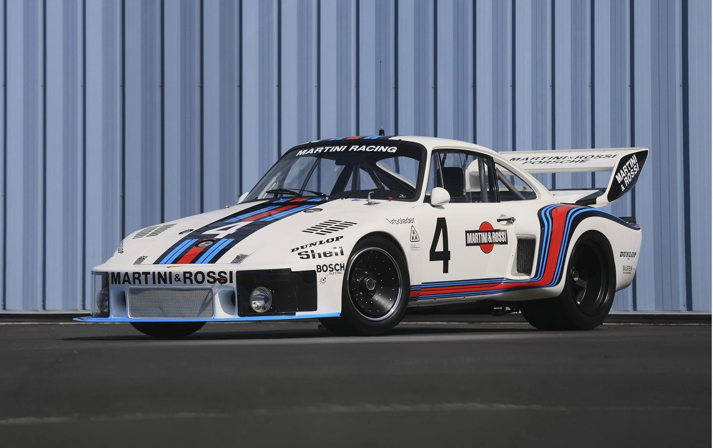
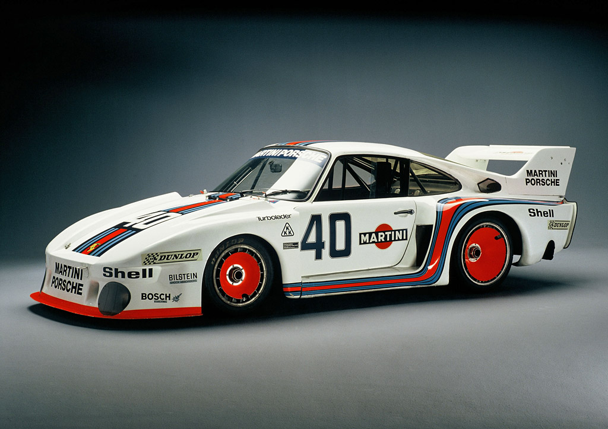
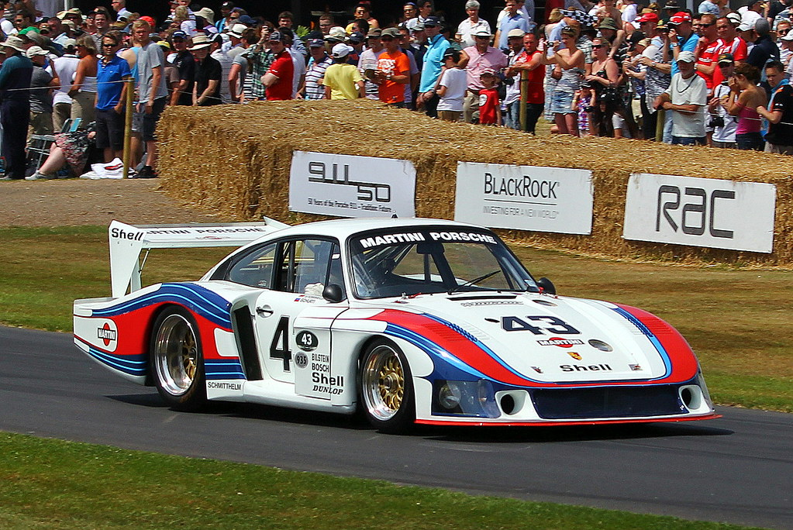
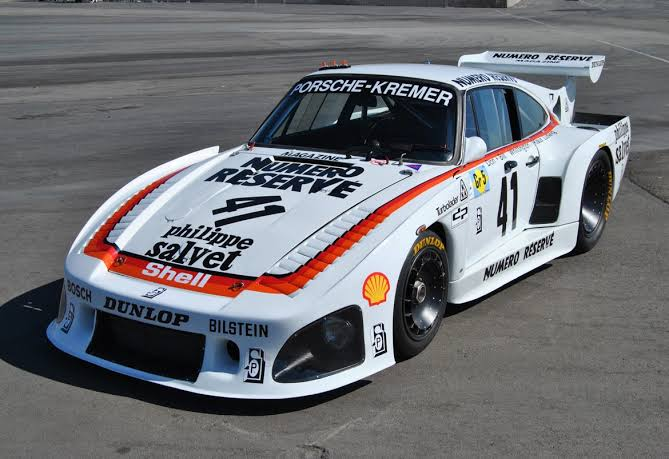
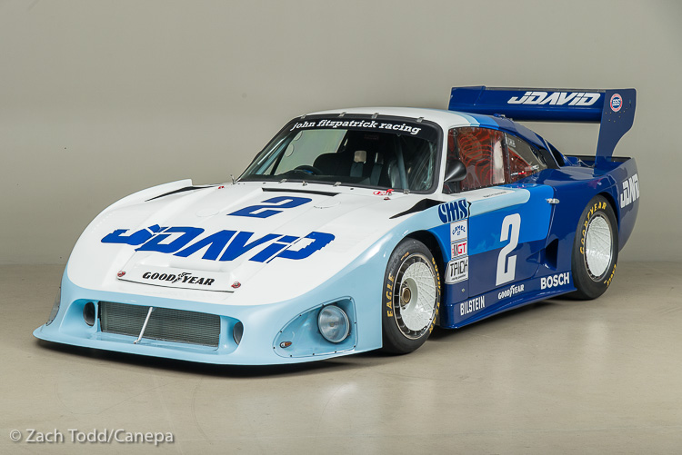
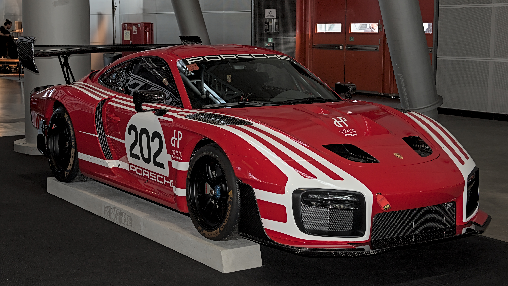
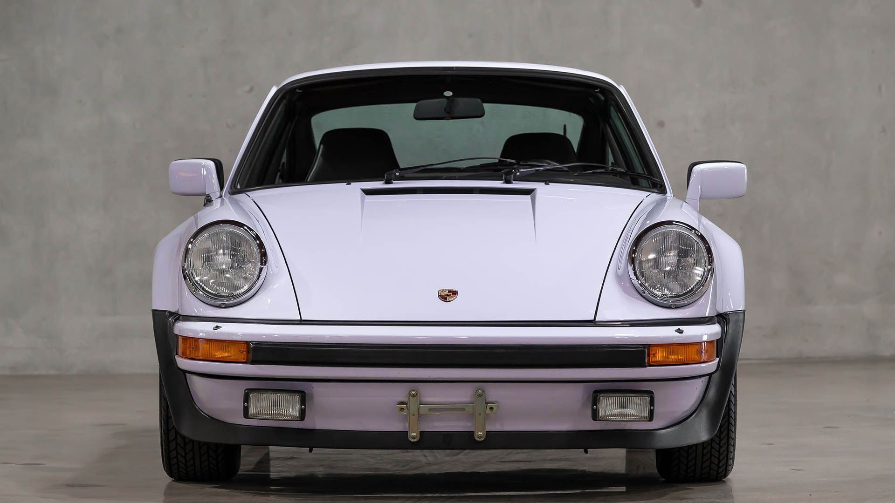
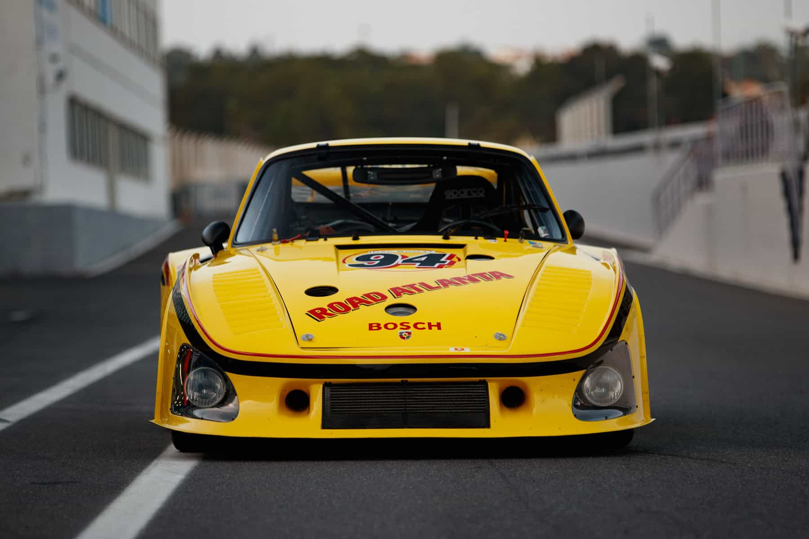
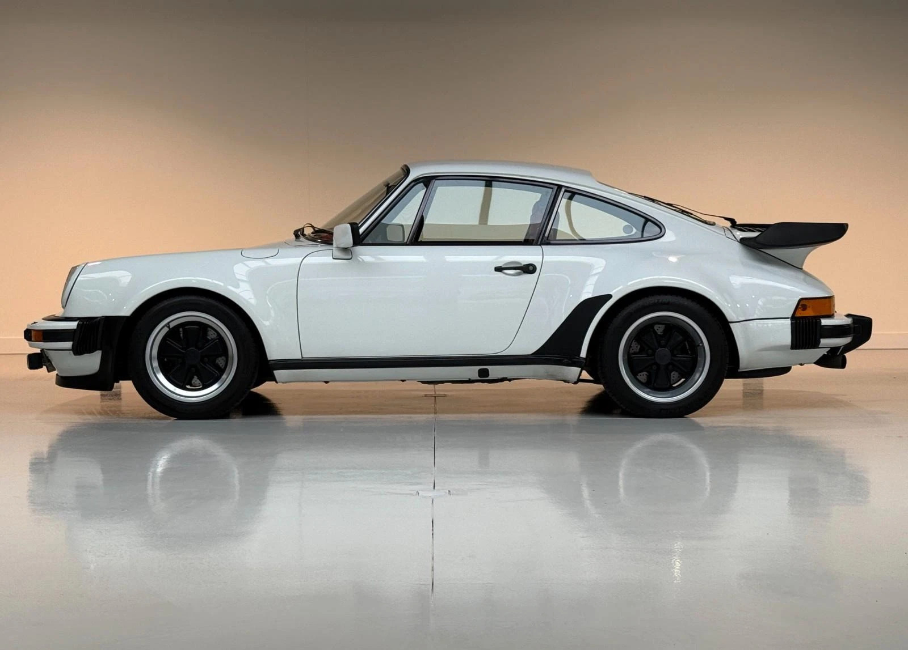
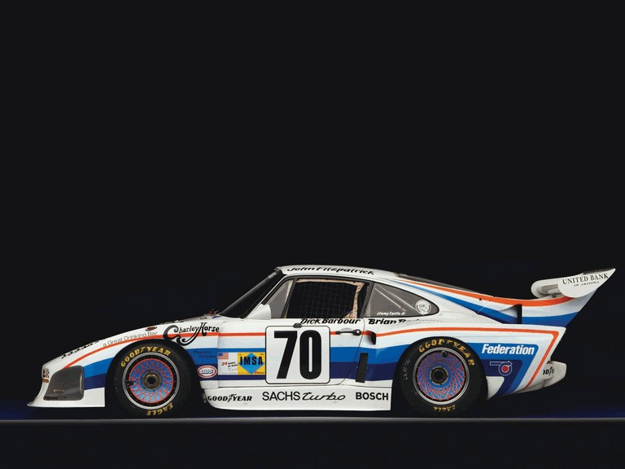

Porsche 935
O Porsche 935 é um carro de corrida derivado do 911 Turbo. Apresentado pela primeira vez em 1976, tornou-se um dos carros mais famosos da história das corridas de resistência. Ao longo dos anos teve várias evoluções
As gerações do Porsche 935
- 935 (1976): A versão original, com motor boxer de 6 cilindros, 2.8 L e um turbo, com cerca de 590 cv. Ganhou pela primeira vez o World Sportscar Championship

- 935/77 (1977): Passou a ter dois turbos mais pequenos, um para cada fila de cilindros, e voltou a vencer o World Sportscar Championship.

- 935/78 "Moby Dick" (1978): Versão experimental com 3.2 L e cerca de 845 cv, com um chassi longo e aerodinâmico, feito para atingir velocidades extremas em Le Mans.

- Kremer 935 K3 (1979): Evolução feita pela equipa Kremer, com cerca de 740 cv. Venceu as 24 Horas de Le Mans de 1979.

- Kremer 935 K4 (1981): Última evolução da Kremer, com um chassi aprimorado.

- Porsche 935 (2018): Edição comemorativa recente, baseada no 911 GT2 RS, com apenas 77 unidades feitas.

Características principais
- Base: Porsche 911 Turbo
- Categoria:
- Motor: boxer de 6 cilindros com turbo
- Carroçaria: asa traseira grande e faróis colocados no capô
- road illegal
porsche 911 gt3 (1979) vs porsche 935 (1979)




Ficha técnica e o vídeo sobre a ultima geração do porsche 935